CONTACT CENTER CAIXA
Importante: Essa arquitetura de referência se encontra em fase de prospecção e não possui nenhum indicativo de uso geral pelas equipes.
Objetivo
- Disponibilização de infraestrutura para o atendimento integrado aos canais de relacionamento CAIXA, por meio de Solução de Contact Center Omnichannel, destinados aos profissionais de Telesserviços ou de Atendimento à Clientes, na modalidade de software como serviço em nuvem pública (SaaS -- Software as a Service).
Processo de Negócio
-
O modelo de negócio advém da necessidade de se implantar um modelo de atendimento integrado, com objetivo de propiciar uma visão que fortaleça o atendimento resolutivo com excelência nos canais remotos.
-
O atendimento integrado compreende na disponibilização dos serviços de atendimento por intermédio de múltiplos canais de comunicação - Omnichannel, de modo a promover a liberdade de escolha ao cliente, fazendo com que a jornada do cliente tenha experiência única e personalizada, com agilidade e eficiência na troca de informações, buscando a resolução no primeiro contato.
-
Deverá permitir que os atendimentos de ligações de e para os clientes da CAIXA sejam realizados pelos empregados e colaboradores da CAIXA, de forma remota, independente da área geográfica, seja em ambiente CAIXA ou regime de home office.
-
Deverá promover a integração estrutural entre as diversas áreas, de modo que toda equipe atue de forma onipresente, provendo atendimento por meio dos canais de voz, webchat, mensagens instantâneas, atendimento automatizado - bot, chatbot, atendimento eletrônico, e-mail, redes sociais e lojas de aplicativos.
-
Deverá implementar os fluxos conversacionais e transacionais com o emprego da TIC, como Inteligência Artificial, Natural Language Processing, Machine Learning, Sintetizador e reconhecimento de voz (TTS e STT), Assistente Virtual (Chat bot), URA Cognitiva, dentre outros disponíveis no mercado.
-
Deverá permitir a criação de regras de roteamento unificada de interações com base em regras de negócio, por qualquer canal de atendimento suportado.
-
Prover módulo de Workforce Management, nativamente, que propicie gerenciamento da qualidade, da produtividade e planejamento eficiente da força de trabalho, com elementos de análise, predição e relatoria, incluindo ações reativas em picos de atendimento.
-
Utilizar interface no idioma português do Brasil.
Produtos e Serviços Impactados
-
Pelos canais de atendimento os clientes, entes públicos e a população em geral, poderão solicitar serviços e informações, registrar reclamações e elogios, enviar sugestões, cancelar e bloquear produtos, dentre muitos outros.
-
Destaca-se os seguintes serviços de atendimento:
-
SAC - Serviço de Atendimento ao Cliente (SAC) ou Central de Relacionamento, responsável pelo atendimento a clientes e não clientes que buscam orientações, explicações, reclamações sobre produtos ou serviços;
-
Help-desk - Serviços para orientações quanto a dificuldades ou a soluções de problemas tecnológicos de serviços e produtos encontrados por clientes;
-
Outros: Atendimento a Cartões, Ouvidoria, Agências Digitais, Habitação, Inadimplência, Mercado Financeiro e demais serviços sociais (FGTS, PIS, Seguro Desemprego, Auxílios)
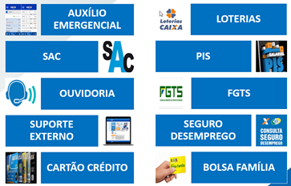
Figura 1 -- Serviços ImpactadosOs atendimentos aos clientes, hoje em regime contínuo, sejam via meios eletrônicos (URA) ou diretamente ao operador, são os pilares da retenção de clientes, em um ambiente de concorrência extremamente acirrada.
Os atendimentos seguem normas rígidas de continuidade e eficiência, consubstanciadas na lei do SAC, que impõe multas elevadas diante de indisponibilidade dos serviços, pelos órgãos reguladores e de defesa do consumidor.
A nova arquitetura proposta possuirá grande abrangência e contemplará, além de todos os serviços de atendimento por voz do Telesserviços e Call Center em Nuvem, atualmente em funcionamento, atendimento a serviços exclusivos de agências, presencialmente, e todos os novos canais digitais.
Essa integração dos canais trará forte impacto no tempo dos atendentes, resultando em aumento da produtividade, agilidade no atendimento, independência geográfica e melhor experiência do cliente.
Cenário Atual
Soluções Isoladas de Atendimento (As Is)
-
O Atendimento da CAIXA, atualmente, é realizado por várias soluções a serem consideradas:
-
Call Center On Premise -- Telesserviços (Voz);
-
Call Center em Nuvem (Voz);
-
Canais Digitais (Whatsapp, Webchat e Chatbot);
-
Balcão Virtual - Videochamada para Deficientes Auditivos;
-
Serviços Terceirizados.
-
-
O Call Center adquirido pela CAIXA, há mais de 15 anos, é o principal canal de atendimento, por suas dimensões e capacidade de atendimento, contando com aproximadamente 8,5 mil Posições de Atendimento Humano e 45 mil portas para Atendimento Eletrônico, simultâneos, recebendo ainda, em torno de 1,5 bilhões de ligações e 60 milhões de gravações ao ano.
-
Essa infraestrutura de atendimento encontra-se instalada no Centro Tecnológico da CAIXA - CTC, em Brasília, sendo exclusiva para o atendimento e operações por voz, e mesmo, passando algumas atualizações tecnológicas, sua capacidade está defasada tecnologicamente e com capacidade limitada, sem condições de crescimento, acréscimo de licenças e possibilidade de implementação de novos serviços necessários ao atendimento digital.
-
E para manter toda essa infraestrutura e serviços em operação, em regime de 24/7, a CAIXA possui um contrato com empresa terceirizada para prestar o suporte tecnológico da solução, que é proprietária, e outro contrato, também com empresa terceirizada, denominada de "Fábrica de Software da CAIXA", para prestar os serviços de desenvolvimento de aplicações AsterisK (Aplicativo de telefonia de arquitetura aberta), com foco em Atendimento Eletrônico (URA).
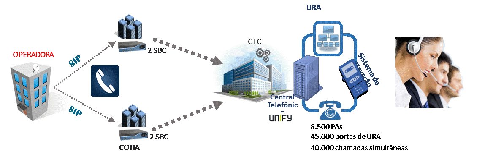
Figura 2 -- Topologia do Telesserviços -
Assim, diante da pandemia e seguindo o estratégico com o objetivo de ampliar e modernizar o atendimento aos diversos canais digitais, para atendimento ao público e aos novos consumidores que vêm exigindo canais alternativos, com atendimento integrado e de forma mais eficaz, abriu-se algumas frentes de ações:
-
Prospectar e instruir processo para contratação de solução completa de Atendimento Integrado a médio/longo prazo;
-
Ampliar os canais de voz com soluções de mercado em nuvem, por meio de contratos emergências;
-
Incluir soluções alternativas de atendimento de alguns canais digitais, pelo menos, também, por meio de contratos emergenciais;
-
Buscar solução de videochamada para deficientes auditivos, para permitir o uso de linguagem de sinais (libras);
-
Ampliar o atendimento, também no curto prazo, utilizando contrato de serviços terceirizados.
-
-
Sem dúvida, o Atendimento Integrado desejado, traria imediatamente, além da comunicação vocal, a interação completa com os clientes, por meio de demais canais digitais, mais modernos.
-
Entretanto, para o curto prazo, a CAIXA encontrou no mercado, soluções independentes, sobre as quais assinou contratos emergenciais com duas empresas distintas, para atender as seguintes necessidades:
-
Ampliação do Atendimento por Voz (CCeN);
-
Inclusão de Canais Digitais (Whatsapp, Webchat e Chatbot).
-
-
No primeiro caso, a solução exclusiva aos serviços de voz foi denominada de Call Center em Nuvem (CCeN) e tem capacidade de atendimento de até 1.000 Posições de Atendimento e 200 Portas de URA.
-
Embora tenha capacidade bem inferior, ele possui algumas características importantes, inexistentes ao Call Center on premise, em operação na CAIXA, tais como: Capacidade até 1.000 PA, pagamento do serviço por PA Ativa, uso de Softphone ou Webphone, Solução Integrada, Discagem Automática Preditiva, Escuta Supervisionada e Relatórios Gerenciais Online.
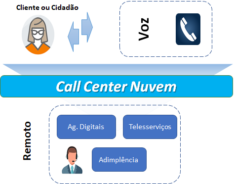
Figura 3 -- Atendimento pelo Call Center em Nuvem -
-
Quaisquer dessas soluções anteriores, Call Center em Nuvem e Terceirizadas, permitem transferências de chamadas (voz) para o Call Center da CAIXA, e para algumas Unidades internas, como CESEG e Ouvidoria, visando atendimentos complementares de segundo e terceiros níveis.
-
Seguindo as frentes de ações relatadas anteriormente, a CAIXA adotou medidas internas, incentivando que os negócios, inclusive os atendimentos, fossem realizados também por meio digital, especialmente se valendo do canal Whatsapp.
-
Portanto, no segundo caso dessas soluções independentes de mercado, que diz respeito ao atendimento digital, os serviços contratados contemplaria, pelo menos, o Whatsapp e o WebChat, com uso de ChatBot.
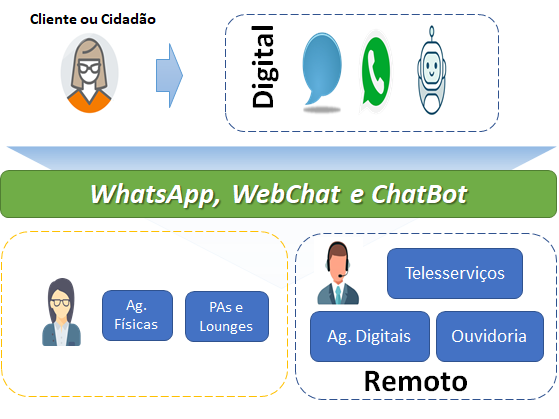
Figura 4 -- Atendimentos Digitais
-
-
Outrossim, em decorrência da Lei nº 5.367, de 5 de Janeiro de 2021, do Estado do Amazonas, sobre a obrigatoriedade das empresas aderirem ao atendimento à deficientes auditivos, por meio de videochamada, nos serviços de atendimento ao cliente \"SAC" e congêneres, a CAIXA buscou solução para se adaptar e atender a tal lei, que deverá se estender em nível nacional.
- Após avaliações dos cenários de soluções possíveis para atendimento às necessidades apresentadas até o momento, optou-se pelo uso da plataforma da Microsoft/Teams, denominada Balcão Virtual, por ser uma plataforma já contratada, sem necessidade de novas aquisições e/ou adequação de licenças.
-
Ainda, outro recurso utilizado para ampliação de canais, no curto prazo, foi a terceirização dos serviços de atendimento, incluindo profissionais e a infraestrutura externa, à exemplo dos atendimentos aos clientes de cartões de crédito, para terceirização parcial dos atendimentos e da infraestrutura do Telesserviços e Agências Digitais.
Arquitetura da Solução On Premise
-
A infraestrutura de atendimento de Telesserviços on premise, implantada atualmente no CTC, em Brasília, e em plena operação na CAIXA, possui a seguinte arquitetura.
-
Essa infraestrutura é constituída basicamente pelos seguintes elementos e módulos funcionais: IP PBX ou Softswitch - Open Scape, DAC -- Distribuidor Automático de Chamadas ou RIC - Roteamento Inteligente de Chamadas, Sistema de Gravação, IVR/URA (Interative Voice Response/Unidade de Resposta Audível), Servidores de Integração e Aplicação, Softwares e licenças de Agentes.
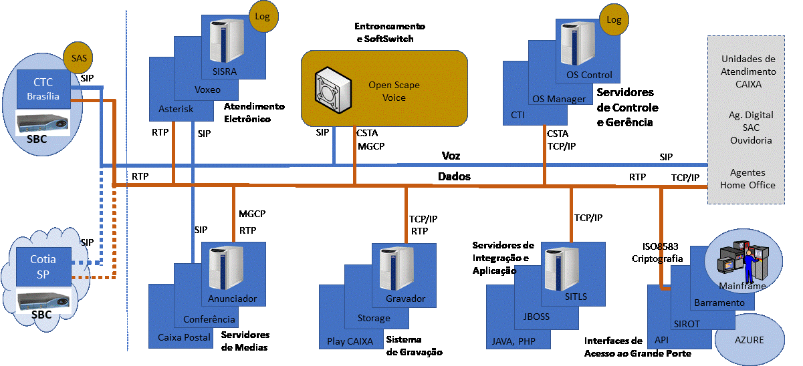
Fig. 5 -- Arquitetura Interna da Solução de Telesserviços *On premisse*Descrição Geral
-
A CAIXA se interliga com a Operadora contratada dos serviços 0800 por meio de entroncamento SIP (SIP Trunking) em alta disponibilidade do tipo ativo-standby, de maneira que, se um sítio ficar indisponível, a Operadora transferirá as chamadas para o outro.
-
A interligação dos troncos é realizada por fibra ótica e terminada nos sítios tecnológicos CAIXA (CTC e Cotia), suportando as chamadas por meio de sessões SIP, cujos acessos são efetuados pelos controladores de borda da CAIXA, denominados de SBC ("Session Border Controller"), também configurados em alta disponibilidade, em cada sítio.
-
Os SBC da CAIXA controlam todas as chamadas entrantes e saintes entre a CAIXA, a Operadora de Telefonia e as empresas contratadas/terceirizadas, sendo que, os fluxos de voz devem passar sempre pelo site principal da CAIXA, para realização dos atendimentos a seus clientes, localmente, remotamente ou pelos parceiros.
-
Internamente, no CTC, para o efetivo funcionamento dos atendimentos, também serão trafegados fluxos de dados, entre os servidores concentradores, integradores e de aplicação, e a rede do mainframe, assim como a rede local dos operadores presentes nas Unidades de Telesserviços ou remotos.
-
Os dados enviados à rede dos operadores são sincronizados com o fluxo de voz, de maneira a serem apresentados aos operadores, referentes ao atendimento vocal em curso.
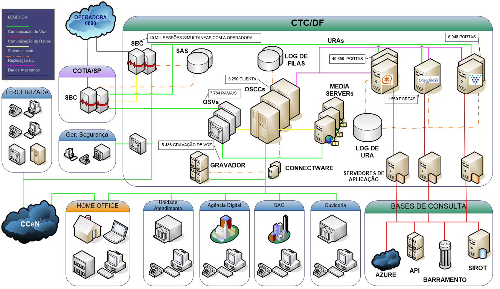
Fig. 6 -- Módulos Funcionais da Solução de Telesserviços
Fluxograma Operacional
-
Conforme fluxograma operacional a seguir, referente a uma chamada entrante (inbound), o cliente inicia a chamada ao serviço 0800 e logo no primeiro atendimento é interceptado pela Operadora, solicitando ao mesmo que escolha o serviço, por meio de uma URA segmentadora, com algumas opções básicas até o terceiro nível.
-
Após a identificação do serviço, toda chamada é encaminhada ao SBC da CAIXA com os dados da opção do cliente, sendo que, em sua maioria atendida pela URA ou, em alguns casos, direcionada à Central Telefonica IP PBX Open Scape (OSCC), para o atendimento Humano.
-
A Central Open Scape (OSCC) recebe, distribui e gerencia o atendimento das ligações atendidas pelos agentes de call center, cujas regras de negócio, personalizáveis, orientam o direcionamento de chamadas em filas, distribuição entre atendentes humanos, eletrônicos e definem relatórios estatísticos.
-
A CAIXA possui várias Unidades de Atendimento, distribuídas em vários estados como Belo Horizonte, Curitiba, Salvador, Brasília, São Paulo e Rio de Janeiro - CEACR-RJ, equipadas com uma central de telefonia, semelhante ao Telesserviços, porém sem integração com o Call Center da Caixa.
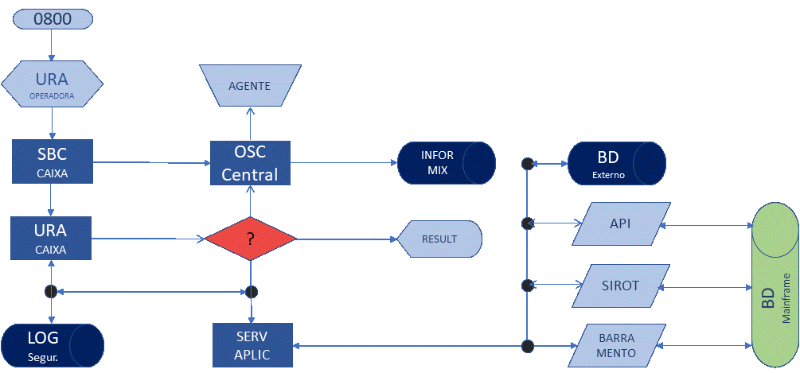
Fig. 7 -- Fluxograma Operacional Básico -- Chamada de Entrada -
No Call Center da CAIXA, as URA fazem o atendimento eletrônico e, caso necessário, derivam as chamadas para atendimento humano no ambiente dessas Unidades, sendo que, todo o detalhamento é definido no desenvolvimento da APL da URA, conforme regras de negócio do gestor.
-
O módulo OSCC armazena os dados estatísticos dos atendimentos realizados: site, período, fila, duração do atendimento, chamadas concluídas, se abandonadas, TMA, dentre outras informações.
-
Toda a interconexão entre as URAS e o ambiente externo (CTI -- Computer Telefony Integration) é realizada através de um pool servidores de integração e aplicação que tem por função, comunicar com o APIManager, Servidores ISO, Barramento, Azure, acessos a bases de dados e afins.
-
As aplicações de URAS -- APL desenvolvidas pela Fábrica de Software contratada pela CAIXA, com os serviços em voz e guiadas pela digitação no teclado telefônico, atendem:
-
Identificação positiva do cliente antes de enviar para o humano;
-
Consulta a serviços a exemplo do seguro desemprego, FGTS, Conta Corrente etc.;
-
Adesão, contratação e cancelamento de serviços: CDC, Cesta de Serviços, FGTS saque imediato, coronavoucher, etc.
-
-
De acordo com a regra de negócio, o atendimento pode ocorrer integralmente na URA ou, parcialmente pela URA e designado novamente à Central OSC, para distribuição da chamada a um Operador humano para dar continuidade ao atendimento.
-
O Servidor de BD de Log de Segurança das URA, têm a função de registrar e armazenar as informações que recebeu da Operadora e do SBC sobre o cliente e a jornada do cliente dentro da URA.
-
Esses dados podem ser: telefone do cliente, região, serviço selecionado, data e hora, dados digitados, retornos obtidos das integrações configuradas, transações escolhidas, efetivas ou chamadas sem sucesso por queda ou desistência do cliente, duração da chamada, qualidade MOS, código de origem de desconexão etc.
-
Nas campanhas ativas, as chamadas também podem ser originadas a partir das Unidades de Atendimento distribuídas e veiculam até o Call Center da CAIXA, por onde sai a chamada pelo SBC, em sentido contrário ao exemplo anterior, até contatar o Cliente.
Call Center em Nuvem
-
O CCeN tem como objetivo a disponibilização de Solução aos profissionais de Telesserviços ou Atendimento à Clientes, na modalidade de software como serviço em nuvem pública (SaaS -- Software as a Service), flexibilizando o trabalho remoto com uso de rede internet.
-
A Arquitetura envolve o Site da CAIXA -- CTC Brasília, o Site da Operadora do Serviço Telefônico Fixo Comutado (STFC) e Telefonia Móvel (celular), o Site do Fornecedor dos serviços de CCeN, os Clientes e Operadores/Atendentes da CAIXA, conforme ilustrado na figura a seguir.
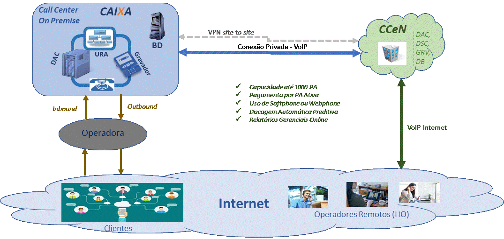
Fig. 8 -- Call Center em Nuvem e Telesserviços -
Sua infraestrutura possui as funcionalidades para serviços de voz inbound, outbound e blended, a disponibilizadas aos profissionais remotos, semelhante aos módulos funcionais do sistema on premise da CAIXA, neste caso composto por:
-
DAC/RIC (Distribuidor Automático/Roteamento Inteligente das Chamadas);
-
Discador Automático nos Preview, Power e Preditiva, configuráveis e parametrizáveis;
-
IVR/URA (Interactive Voice Response/Unidade de Resposta Audível)
-
Sistema de Gravação Automática, com filtros seletivos para pesquisas das conversas gravadas;
-
Sistema de Gestão dos Serviços em plataforma Web;
-
Aplicativo para comunicação do tipo Softphone e Webphone.
-
-
Os serviços compreendem: Roteamento Inteligente das chamadas, Atendimento Receptivo por Atendente Humano ou Eletrônico, Operação de Chamadas Ativas de forma Manual ou Automática, Gravação e Gerenciamento Total ou Parcial das ligações realizadas.
-
Todos os contatos são registrados e apresentam as estatísticas das campanhas, inclusive as tentativas sem sucesso.
-
Mais informações poderão ser obtidas na descrição de Arquitetura de Referência de Call Center em Nuvem, conforme Referência no Item 11.
Canais Digitais Parciais: Whatsapp, Webchat e Chatbot
-
Os canais digitais, atualmente na CAIXA, contempla o atendimento via chat nos canais de WHATSAPP e WEBCHAT, com uso de CHATBOT, também na modalidade de Software como Serviço em nuvem pública -- SaaS.
- O uso de chatbots (robôs) integrado aos sistemas internos das empresas, visam reduzir os atendimentos de agências e liberar os empregados para exercerem atividades inerentes ao atendimento presencial.
-
O atendimento de tais canais é realizado por meio de atendimento humano ou por meio de chatbots, com front-end único, disponibilizando histórico de atendimento do cliente, contextos de diálogos, filas parametrizáveis, possuindo recursos e relatórios de gestão dos atendimentos.
-
Há uma base unificada de todas as interações dos clientes, com os anexos e referências aos arquivos trocados nos atendimentos, permitindo exportação, utilizando o padrão tecnológico e integrações com API's CAIXA.
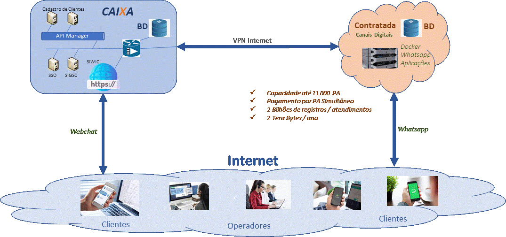
Fig. 9 -- Serviço de Atendimento Webchat e Whatsapp -
Foram definidas 11 mil posições de atendimento humano para suportar os picos de acesso simultâneos, com volume de 2 bilhões de registros ao ano, ocupando uma média de 2 Terabytes.
-
A Solução possui ainda as seguintes característica funcionais:
-
respostas por texto automatizadas, utilizadas de acordo com os meios de acesso do cliente, as regras de negócio e configurações na Solução;
-
permite implementar uso de árvores de atendimento com interação por menu numérico, menus textuais, e por interação direta, com capacidade para no mínimo 150 expressões chave;
-
possibilita a parametrização de árvores com base em tecnologia \"drag-and-drop\", sem a necessidade de uso de códigos-fonte, de forma totalmente gráfica, visando facilitar o uso pelos gestores e administradores;
-
permite alteração, desenvolvimento de menus, submenus, de novas árvores de navegação e testes, remotamente, em canais ou módulos isolados do ambiente de produção, antes da ativação e replicação das novas configurações aos outros canais e máquinas;
-
permite a supervisão, a monitoração, a modificação da árvore de menus, a modificação do horário de atendimento, a marcação de datas como feriados e finais de semana, através de interface gráfica, sem a necessidade de reset, paralisação parcial dos grupos de portas e paralisação do bot;
-
permite a criação de regras de desconexão por inatividade do cliente, tanto durante a navegação dentro da arvore quanto durante o atendimento humano;
-
-
No caso de transferência para um atendente humano, todo o histórico do atendimento por "bot" deverá ser repassado para o atendente humano, visando continuidade do atendimento, da mesma maneira como se estivesse sendo transferido por outro atendente.
- Entretanto, são contratos e serviços isolados aos serviços de voz atendidos pelos Call Center, ou seja, possui infraestrutura apartada do Telesserviços on premise e do Call Center em nuvem.
Armazenamento
-
A CAIXA empregou infraestrutura diversificada para as soluções de atendimento atuais por voz, vídeo e canais digitais. Logo, soluções isoladas implicam em locais de armazenamento distintos, assim como ferramentas de gerenciamento, busca e pesquisa diferentes.
-
O Telesserviços, por exemplo, possui sistemas diversos para armazenamento de dados, tais como informações de clientes, atendimento eletrônico, atendimento humano, gravação de voz, telas e logs de comunicação e operação entre sistemas.
- Os Logs do SBC, de segurança e da Central OSC são armazenados no servidor CCTDCDADNT0202, os logs de URA são armazenados no servidor CTSDCAPLNT0202, enquanto as gravações de voz utilizam o sistema de gravação proprietário do fabricante e depois são transferidas ao servidor CCTDCDADNT0118.
-
No caso do CCeN, todas as informações são armazenadas no ambiente da Contratada para depois de alguns meses serem transferidas ao servidor CCTDCDADNT0118, que é a base de dados utilizada pelo Play CAIXA.
- Play CAIXA é a ferramenta atual de busca, execução e pesquisa, utilizada para recuperação das mensagens gravadas.
-
Para os Canais Digitais -- WebChat e Whatsapp, todas as informações são registradas e armazenadas nos equipamentos da Contratada para posterior transferência e internalização das informações em outro servidor de propriedade CAIXA, utilizando VPN em conexão de internet.
-
Os registros gerados pelos atendimentos realizados por meio de videochamada, na solução Balcão Virtual, ficarão armazenadas nos servidores da Plataforma Microsoft /Teams, contratada pela CAIXA.
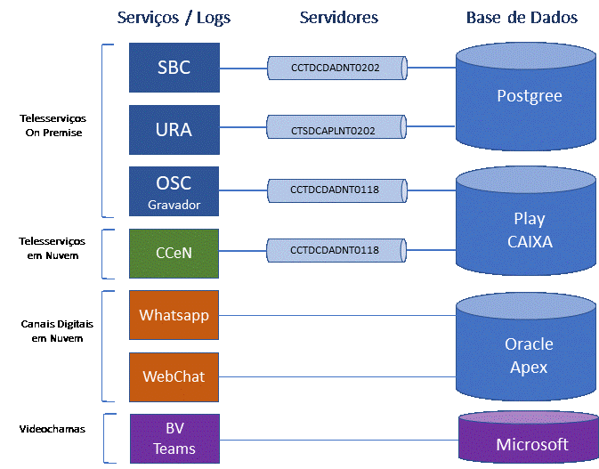
Fig. 10 -- Armazenamento das Informações -
Conforme tabela a seguir, percebe-se o elevado volume de informações a serem transmitidas e armazenadas, trazendo alguns transtornos como problemas de espaço e indexações dos registros, dificultando a busca das informações de voz, tela e documentos transacionais.
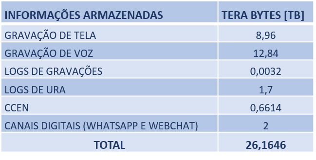
* Volume Registrado em período de 12 meses
** Volume de videochamadas ainda inexistente -
Para solucionar tais problemas, há necessidade de solução integrada, com capacidade para absorver as informações de todas as soluções, assim como facilitar o processo de pesquisa para eventuais auditorias.
Contact Center CAIXA - Omnichannel
Atendimento Integrado Omnichannel
-
Importante definir alguns conceitos sobre os tipos ou estratégias de atendimento, como singlechannel, multichannel, crosschanel e omnichanel.
-
O primeiro refere-se a um único canal isolado de atendimento, como o de voz, por exemplo, enquanto os demais possui mais de um canal de comunicação com seus clientes.
-
A diferença, entretanto, está na relação entre eles, podendo ser canais isolados, ou haver algum tipo de transferência ou, ainda, integração total entre eles, para dar continuidade ao atendimento, como mostra a figura a seguir.
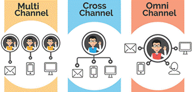
Fig. 11 -- Estratégias de Atendimento -
Na plataforma Omnichannel o atendimento é unificado, capaz de absorver toda a demanda, integrando todos os meios digitais e voz, incluindo interação completa com o cliente.
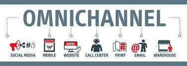
Fig. 12 -- Omnichanel -- Atendimento Unificado -
Assim, o relacionamento com as pessoas, seja para o atendimento ou realização de negócios, por meio de uma solução Omnichannel, torna o atendimento mais eficaz e melhora sobremaneira a experiência do cliente.
Fig. 13 -- Atendimento Integrado - Omnichannel -
O Atendimento Integrado traz, dentre outras, as seguintes facilidades:
-
Atendimento por meios digitais e voz, utilizando a mesma fila, com possibilidade de priorização dependendo do perfil ou identificação do cliente;
-
Acompanhamento de todos os atendimentos realizados pelo cliente, armazenando e utilizando todo seu histórico nas futuras interações;
-
Automatização dos atendimentos por URA Inteligente acionada por voz, bots diversos para os atendimentos digitais, além de direcionamentos internos conforme estado emocional do cliente, seu perfil, assunto tratado, dentre outros;
-
Obtenção de capacidade para realização de negócios durante o atendimento receptivo, com ofertas apresentadas conforme diversos parâmetros, como nível de atendimento e perfil do cliente, assim como ofertas disponibilizadas.
-
Monitoração plena de parâmetros de qualidade, de maneira a otimizar a alocação de atendentes, assim como simular implantações e impactos na operação;
-
Celeridade nas implementações, mudanças e ampliações.
-
-
Logo, a nova proposta é que as aplicações digitais contratadas pela CAIXA, juntamente com o atendimento por voz e outros canais a serem incluídos, devam se complementar em uma única Solução Integrada - Omnichannel, e que irá substituir as soluções isoladas, cuja proposta é descrita a seguir.
Solução Proposta do Contact Center CAIXA
-
Consiste na disponibilização de Solução de Contact Center Omnichannel (CCO), na modalidade SaaS (Software as a Service) em nuvem, estruturada sob plataforma única e gestão unificada, com arquitetura multi-tenancy, 100% apartados, para atender as áreas e empresas do conglomerado CAIXA.
-
A capacidade deverá ser adequada parar garantir disponibilidade de 99,99%, qualidade e performance, considerando a suficiência de atendimento de picos simultâneos e expectativas de crescimento.
-
A solução deverá suportar interação omnichannel para voz e canais digitais por meio de voz, webchat, mensagens instantâneas, atendimento automatizado (bot, chatbot/voicebot e atendimento na URA), e-mail, redes sociais e lojas de aplicativos, Web Interaction, permitindo aos agentes, visualização do histórico de interação do cliente com a central de atendimento em interface unificada de atendimento.
-
Deverá apresentar front-end único de atendimento, com base de conhecimento, scripts de atendimento e processos guiados, com fila universal independente do canal de entrada, protocolo único, servidor de contexto único para todos os canais, visão 360° do cliente em todos os canais de voz e remotos da CAIXA, curadoria, pesquisa de satisfação, relatoria/dashboard e gestão operacional completa do Contact Center.
-
O sistema ou aplicações de telefonia (voz) deverá conter os seguintes módulos funcionais: IP PBX/Softswitch, RIC -- Roteamento Inteligente de Chamadas, Discador Automático, Sistema de Gravação, IVR/URA (Interative Voice Response/Unidade de Resposta Audivel), Softwares e licenças de Agentes.
-
Prover os recursos de Assistente Virtual Cognitivo, com capacidades de reconhecimento de voz e do contexto de conversa, ASR (Automatic Speech Recognition) e análise da Fala e Texto (Speech e Text Analytics), comando de voz, text to speech (TTS) e speech to text (STT), uso de Inteligência Artificial.
-
A interface de atendimento unificada deverá suportar a interação omnichannel para todos canais remotos e, da mesma forma, possuir painel de gerenciamento unificado para administração, parametrizações e configurações dos elementos constituintes, com Reporting e Dashboard.
-
A Solução deverá permitir implementar bots para todos os meios de acesso, com utilização de inteligência artificial, de maneira a identificar o contexto, entender as perguntas, implementar as respostas corretas e registrar na Solução as interações realizadas, finalizando o atendimento ou transferindo a chamada para um atendente.
-
Possuir Módulos de Gestão e Administração, Gerenciamento da Força de Trabalho WFM (Workforce Management), Monitoramento de Qualidade e Gerenciamento de Desempenho.
Fig. 14 -- Módulos de Gestão, Administração e Gerenciamento -
As funcionalidades para voz (singlechannel), descritas nas soluções de Telesserviços e Call Center em Nuvem, também valem para o caso do Omnichannel, tais como atendimento via IVR/URA e Discadores Automáticos, com vantagem de total integração aos demais canais e adição dos recursos de reconhecimento de voz, assistente virtual cognitivo, TTS, Inteligencia Artificial, dentre outros.
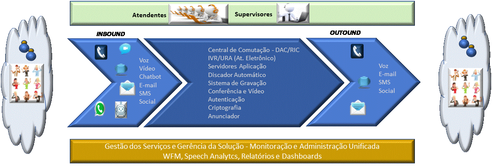
Fig. 15 -- Funcionalidades, Recursos e Atores na Solução Omnichannel -
As interfaces para operacionalização das funcionalidades deverão ser unificadas, ou seja, todas as funcionalidades solicitadas deverão ser apresentadas em interface única para cada tipo de usuário: Operador, Supervisor, Administrador e Técnico de suporte.
- Todas as interfaces de usuários deverão ser do tipo GUI, altamente interativas, utilizar cliente em software, habilitado em estações de trabalho e notebooks, com sistema operacional windows ou via Web, simples, de maneira que o usuário não necessite de conhecimentos técnicos de TI para sua operação.
-
Durante um atendimento, a solução deverá executar as operações básicas de roteamento inteligente de chamadas (RIC), autoatendimento, transferência de atendimentos entre canais com a manutenção do contexto, gravação dos atendimentos em áudio, vídeo e texto, e troca de arquivos.
-
As gravações ocorrerão de maneira automática (total) ou por determinação do agente (parcial), sendo que, todas os arquivos gerados deverão ser armazenados no ambiente em nuvem, pelo período mínimo de 2 anos ou até o encerramento do contrato, permitindo ainda o encaminhamento periódico dos mesmos, ou a qualquer tempo, para armazenamento no ambiente determinado pela CAIXA.
-
Deverá permitir o expurgo das gravações, caso necessário, antes de sua transferência para o Data Center da CAIXA ou ambiente indicado pela CAIXA, conforme necessidades do Gestor, padrões e normas internas.
-
Implementar a indexação de todos os arquivos armazenados, permitindo a gestão e buscas por quaisquer parâmetros definidos previamente, facilitando auditoria e acompanhamento das ligações gravadas, por meio de software de monitoramento e avaliação da qualidade.
-
-
Prover autoatendimento eletrônico com URA Cognitiva, com interação por menu numérico, comandos vocais, visuais e textuais, com atendimento integral da solicitação do usuário ou transferência para atendimento humano na solução de Contact Center ou ainda atendimento híbrido automático/humano.
- Utilizar o Assistente Virtual Cognitivo para responder as mais variadas perguntas referentes aos serviços e informações necessárias em sua base de conhecimento, sem a interferência humana, atendendo as solicitações (registro), provendo o encaminhamento e tratamento.
-
Toda operação poderá ser acompanhada por Supervisores, por meio de interface Web, utilizando-se de dasboard e relatórios gerenciais, de onde extraem-se informações sobre as ligações para gestão da produtividade e utilização da Solução.
Arquitetura Definida (To Be)
-
O Contact Center Omnichannel deverá utilizar infraestrutura própria e fora do ambiente da CAIXA, cuja Arquitetura envolve o Site da CAIXA -- CTC Brasília, o Site da Operadora do Serviço Telefônico Fixo Comutado (STFC) e Telefonia Móvel (celular), o Site do Fornecedor dos serviços de Call Center Omnichannel em Nuvem, os Clientes e Operadores/Atendentes da CAIXA, conforme ilustrado na figura a seguir.
-
Durante a fase de implantação a Solução deverá conviver com o Call Center da CAIXA, atualmente em operação, onde os serviços de telefonia (voz) serão gradativamente transferidos para o novo Contact Center.
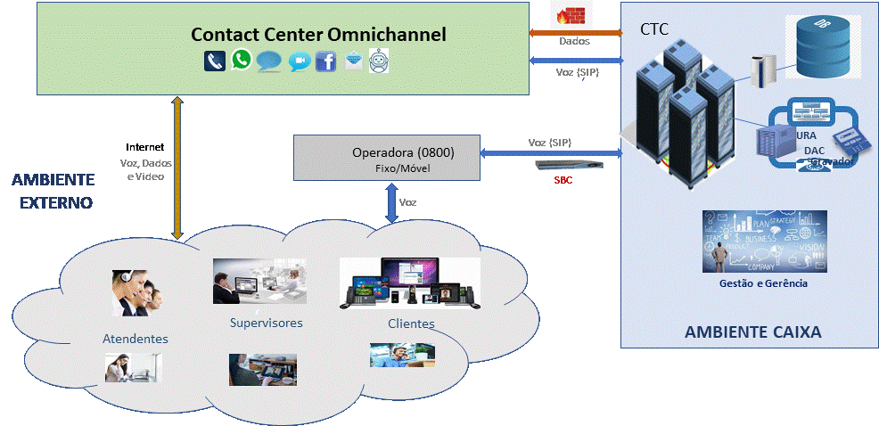
Fig. 16 -- Topologia da Solução na Fase de Transição- Neste caso, permanecerá a estrutura interna no CTC, ainda, com as funcionalidades do atendimento eletrônico e servidores de aplicação, conforme descrito no item 7.2. Arquitetura da Solução On Premise.
-
A medida que as funcionalidades e aplicações, especialmente da URA, vão sendo desenvolvidas e implementadas no novo Contact Center, as chamadas de voz serão também transferidas e a solução vai ganhando autonomia.
-
Assim, após a implantação completa, todos os serviços deverão ser atendidos apenas pelo Contact Center Omnichannel, ficando a critério da CAIXA optar pelo período necessário por manter parte desses serviços de voz no ambiente da CAIXA.
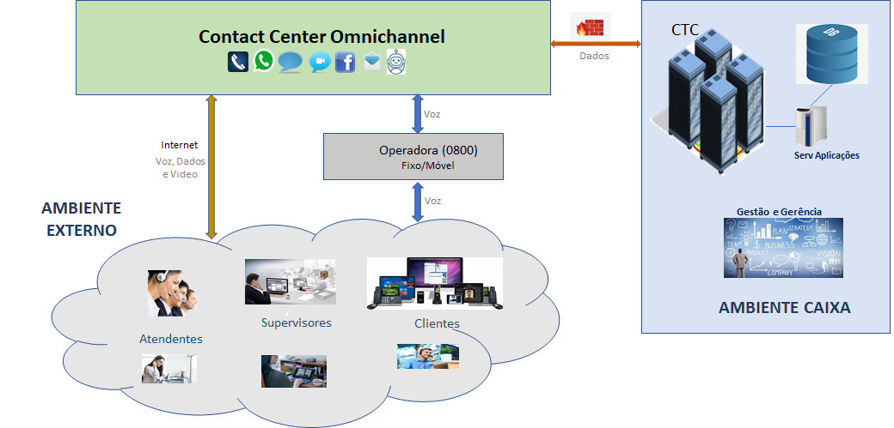
Fig. 17 -- Arquitetura da Solução Definitiva (To Be) -
Neste caso, serão desativados a central e os demais elementos da solução on premise, permanecendo apenas alguns servidores integradores e de aplicação para interação com o mainframe (DB).
-
Exclui-se também os links de voz -- SIP trunk, entre "Contact Center Nuvem \<=> CAIXA" e entre "Operadora \<=> CAIXA", pois o atendimento ocorrerá diretamente pela infraestrutura da solução da empresa Contratada.
Conectividade
-
Conforme Arquitetura de Transição, durante a fase de implantação, a conexão entre CAIXA, Operadora de Telefonia e a Solução de Contact Center Omnichannel se dará por meio de links de voz e dados.
-
Nesta fase, todas as ligações telefônicas deverão entrar ou sair pelo SBC da CAIXA, e não diretamente da Solução, por meio de entroncamentos SIP Trunking.
- A Solução deverá, caso a CAIXA solicite, receber todos os entroncamentos de voz advindos de empresas de telecomunicações ou outras centrais de atendimento (Call Center) contratados pela CAIXA.
-
Após a implantação e estabilidade operacional de toda a Solução Omnichannel, a conexão de voz, via SBC CAIXA, deverá ser desativada e a Solução definitiva terá apenas a conexão de dados entre a CAIXA e a nova Solução de Contact Center em Nuvem, conforme Figura 15 -- Solução Definitiva.
-
Os circuitos de dados necessários à conectividade e troca de informações com a CAIXA deverão ser dimensionados e fornecidos pela empresa contratada.
- O acesso entre a Solução e a Rede CAIXA se dará mediante circuitos dedicados com tecnologia LAN TO LAN ou MPLS, dispondo de circuito principal e contingente, por Operadoras distintas, onde qualquer um assuma todo o tráfego durante a queda do outro.
-
O local de instalação dos circuitos dedicados - principal e contingente, será o Centro Tecnológico Datacenter (DTC) e Centro Tecnológico CAIXA (CTC), respectivamente, sendo que, conforme conveniência técnica ou econômica, serão analisadas pela equipe de Engenharia de Rede da CAIXA, a possibilidade de nova conexão ou de instalação em outras localidades estratégicas, dentro do território nacional.
- A Operadora deverá fornecer concentrador na ponta da CAIXA ou fazer uso compartilhado destes equipamentos de infraestrutura e equipamentos no respectivo site da CAIXA, adotando a arquitetura de compartilhamento de conexões físicas, realizando as configurações necessárias de rede e de firewall, conforme padrões e normas estabelecidas pela CAIXA.
-
As redes (LAN e WAN) no ambiente da Solução deverão possuir comunicação segregada e exclusiva para acesso à Rede CAIXA, sendo vedado qualquer acesso à internet nesta rede.
-
A conexão com os equipamentos da CAIXA será por meio de interface padrão ethernet, com endereçamento IP WAN definido entre CAIXA e CONTRATADA.
-
A Solução deverá disponibilizar-se de equipamentos para roteamento dinâmico BGP (border gateway protocol), para divulgação dos endereços IP de serviço.
Interoperabilidade
-
Todos os componentes da solução deverão ser completamente integrados e interoperáveis entre si e se integrar com a solução da CAIXA.
-
Solução deve prover tratamento de arquivos digitalizados e ferramenta de antivírus para verificação dos arquivos transmitidos, não devendo impactar o desempenho necessário da solução para o atendimento dos parâmetros de qualidade definidos neste contrato.
-
A solução deverá possuir módulo de inteligência artificial integrado.
-
Todos os fluxos de mídias trocados entre a CAIXA e a CONTRATADA deverão ser suportados por plataforma de segurança e compatibilidades que assegure as seguintes funcionalidades:
-
Possuir capacidade de realização de todas as suas atividades de inspeção, análise e bloqueio compatível com o volume de chamadas especificado neste documento, de maneira a não inserir quaisquer atrasos ou problemas nas comunicações de tempo real e sem nenhum prejuízo às capacidades exigidas nestas especificações.
-
Proteger contra avalanche de registros, mesmo quando for usado autenticação para os Registros de usuários SIP. A solução deve permitir que todos os usuários se registrem aos poucos durante uma avalanche, sem comprometer o SBC e nem os Application Servers envolvidos.
-
-
Todas as interações entre os atendentes e clientes, via meios textuais síncronos (chat e instant messengers) não poderão ter latência maior que 2 segundos, entre o final do comando dado pelo cliente e a sua apresentação na tela do Atendente.
-
No caso da digitação, a solução deverá apresentar visualização na tela de quem escreve, das próprias informações digitadas de maneira instantânea, não sendo aceitos delays que prejudiquem a fluidez da digitação. Tal característica é aplicável tanto ao atendente quanto ao cliente.
-
As interações dos Bots com os clientes não poderão ter latência superior a 3 segundos, contados desde o final do comando dado pelo cliente até o início da resposta do Bot, independente do meio de acesso.
-
No caso das chamadas de voz e vídeo, estas deverão ser fluidas e sem delays ou variações, com qualidade superior ao índice MOS (Mean Opinion Scope).
-
O fluxo de voz aceitável da solução deverá obedecer aos seguintes limites: Latência máxima de 70 ms; Máximo de jitter de 30 ms e perda de pacotes máxima de 1%.
-
Entende-se por latência máxima total de uma via, o tempo de entrada da voz do cliente até o atendente ouvir a sua voz, com clareza, e vice-versa, considerando que as redes dos clientes e operadores/atendentes, externos ou remotos, estejam dentro dos parâmetros adequados para suportar o tráfego de voz com qualidade.
-
Sistema De Gerenciamento e Gestão Da Solução
-
A Solução deverá possuir Gerência de monitoração dos circuitos e conexões, com acompanhamento periódico do consumo dos circuitos providenciando aumento de capacidade preventivamente caso necessário, tomando ações necessárias, preventivas e reativas, em caso de incidentes ou necessidades que surgirem.
-
A Solução deverá disponibilizar painel de controle (dashboard) para gestão dos serviços, assim como para ateste das faturas, com atualização em tempo real.
-
Os sistemas de Gravação, Monitoria de Qualidade (Qualtiy Monitoring), Gerenciamento de Desempenho (Performance Management), Análise de Fala/Texto (Speech e Text Analytics) e Gerenciamento da Força de Trabalho (WFM), deverão ser do mesmo fabricante, compondo uma suíte integrada com todos esses módulos.
-
Toda a interface da Solução com o usuário final se dará no idioma português do Brasil.
Considerações Finais
-
O objetivo principal da Arquitetura de Contact Center Omnichannel, aqui especificada é ampliar e modernizar o atendimento aos diversos canais digitais, para atendimento ao público e aos novos consumidores que exigem canais alternativos, com atendimento integrado e eficaz.
-
Trata-se de uma arquitetura nova e de alta complexidade, envolvendo diversas áreas técnicas e negociais e que demandará tempo para desenvolvimento, implementações e incorporações de todos os serviços.
-
Portanto, até que a nova solução esteja plenamente em operação, o Contact Center Omnichannel deverá operar de forma concomitante com o Telesserviços da CAIXA, on premisse, por um período de transição, uma vez que este possui arquitetura consolidada e operação estável para o canal de voz.
-
Considera-se a Solução ativada em operação, quando todos os acessos e canais estiverem disponíveis aos clientes e agentes, com as configurações e parametrizações implementadas ao seu pleno funcionamento, sendo que a partir daí essas atividades passam a ser um trabalho continuo de acompanhamento e melhorias.
-
O dimensionamento da Solução deverá ser realizado com base nos requisitos funcionais, não funcionais e volumetria estimada, indicados nas especificações técnicas, junto ao processo de contratação.
-
Da mesma forma, todos os detalhes técnicos de conectividade, segurança, integração e implantação deverão estar de acordo com os documentos pertinentes de especificações e referências indicadas no item 11 -- Referências.
Definições, Acrônimos e Abreviações
Termo Definição Agente Pessoa que trabalha em centrais de atendimento como operador ou atendente (colaborador) Agente Universal Colaborador na função de [agente do contact center que divide o seu tempo e a sua atenção entre vários atender às necessidades dos clientes AR Uma experiência interativa de um ambiente do mundo real onde os objetos do mundo real são "aumentados" por informação perceptiva gerada por computador ASR Reconhecimento automático de voz. Consulte Reconhecimento de linguagem natural Assistente Virtual Cognitivo Aplicaçoes que usam Iinteligência Artificial para decodificar a voz humana, consultar bancos de dados ou sistemas de pesquisas e retornar informações úteis para os usuários, podendo ser usado em URA ou Chatbot, capazes de aprender, tomar decisões, resolver problemas complexos e se desenvolver com programações em seu banco de dados e muito poder de consulta a outras referências, como as redes sociais, como Siri (da Apple), Cortana (da Microsoft) e Alexa (da Amazon) Call Center Central de relacionamento e atendimento com o cliente por meio do telefone - canal de voz CCeN Call Center em Nuvem ou Contact Center em Nuvem Contact Center Plataforma de relacionamento ao cliente via múltiplos canais de atendimento - telefone, chat, redes sociais da internet, aplicativos, e-mail etc. Blended Operação mixta, ativo e receptivo Callback Recurso para retornar a ligação quando a ligação do cliente cai ou uando está em fila de espera CRM Customer Relationship Management - nome dado para um software que armazena, distribui e atualiza os dados de clientes CTI Computer Technology Integration -- software e protocolo de comunicação utilizado para integração entre sistemas de telefonia e computador Fila Um tipo de número de diretório criado para armazenar chamadas ou mensagens que estão aguardando para serem atendidas GUI Interface gráfica de usuário - aproveita os recursos gráficos do computador para tornar visualmente mais fácil a utilização de cada programa IA Inteligência Artificial - agrupamento de várias tecnologias, como redes neurais artificiais, algoritmos, sistemas de aprendizado, entre outros para simular a inteligência humanas, cujas softwares servem para emular, com muito mais capacidade e rapidez, a capacidade humana de pensar, raciocinar, analisar e tomar decisões Linguagem Natural capacidade de compreender expressões complexas faladas de maneira mais natural e livre, Power Dialer Modo de operação de Discador Automático, em que o sistema realiza as discagens sempre que um atendente estiver disponível Predictive Dialer Modo de operação de Discador Automático, em que o sistema possuir capacidade de parametrizações, por meio de algoritmo estatístico, capaz de analisar os dados históricos das discagens de cada campanha e prever a quantidade de discagens necessárias para obter a melhor performance Preview Dialer Modo Discador em que o sistema exibe, para o Agente, os dados do cliente antes de realizar a discagem, permitindo que ele decida se quer ou não fazer aquela ligação, de modo que o possa se preparar para o atendimento antes de contatar o cliente. SBC Session Border Controller (Controle de Borda de Sessão) -- possui varias funções de controle entre redes de voz diferentes, fazendo a demarcação e a ocultação de topologia e travessia de NAT, transcodificação, compatitlização IPv4/IPv6, segurança etc. Servidor CTI Servidor que hospeda o software que monitora os eventos de telefonia (sinal para chamar, número ocupado, entre outros) no switch *Speech Analytics * Análise de dados de voz - consiste em uma tecnologia responsável por identificar e extrair características de dados de voz, transformando sentimentos e emoções do interlocutor em dados, que serão posteriormente processados, para ações estratégicos ao negócio TTS recurso que permite que um aplicativo reproduza voz diretamente de um texto, convertendo esse texto em fala sintetizada Workforce estratégia que moderniza tecnologias e plataformas de call center por meio do uso de canais digitais, para melhorar a experiência e a satisfação do cliente. WFM Gestão da Força de Trabalho - administração de uma sequência de tarefas e processos relacionados com a força de trabalho de uma organização WFO Otimização da força de trabalho - estratégia utilizada para integrar tecnologias desconectadas e automatizar processos para reduzir os custos operacionais e administrar melhor o desempenho dos colaboradores, resultando em maior eficiência e mais satisfação do cliente Workflow conjunto e sequência de procedimentos para a execução de uma ou mais tarefas na central de atendimento Referências
Arquiteturas de TI:
-
Call Center em Nuvem
-
Segurança:
-
Infraestrutura de Nuvem:
-
Segurança em Nuvem:
Legislação:
-
Decreto nº 6.523/2008 - Lei do SAC (Serviços de Atendimento ao Cliente)
-
Lei 13.709/2018 -- Lei Geral de Proteção de Dados Pessoais (LGPD)
-
Resolução CMN nº 4658 de 26/ABR/2018 - específica sobre serviços em nuvem para o setor financeiro, política de segurança cibernética e sobre os requisitos para a contratação de serviços de processamento e armazenamento de dados em nuvem.
-
Resolução CMN nº4.752 de 26/NOV/2019 -- Altera e atualiza a Resolução nº 4.658.
Normativos:
-
MN TE 088 - Telefonia
-
MN TE111 -- Padrões Arquiteturais
-
MN TE213 -- Gestão de Riscos de TI
-
MN TE232 -- Diretrizes de Segurança para Utilização de API
-
MN TE227 -- Diretrizes para Utilização de Nuvem Pública
Histórico das Revisões
Data Versão Descrição Responsável 24/02/2022 1.0 Primeira Publicação no Portal Francisco Teodoro Assis Carvalho (SUART07)
-